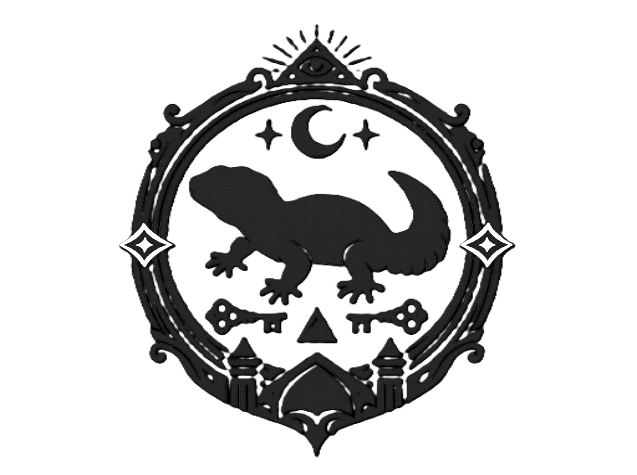

日常に潜む、非日常への入り口を探求するための結社。

日常は閉じた現実ではなく、つねに非日常へと開かれている。
われらは歩くことで風景の表面をずらし、そこに潜む違和、気配、裂け目、誘惑を観測する。
歩行とは移動ではなく、世界の深度を変える技法である。
本会の活動は、新たに設けられない。
すでに日常のうちにある歩行こそが実践である。
われらはただ、そこに別の意味を与える。
「ここは日常か？」
「まだそうとは限らない」
入会方法は現在整備中です。
いずれ会員証の頒布を予定しています。